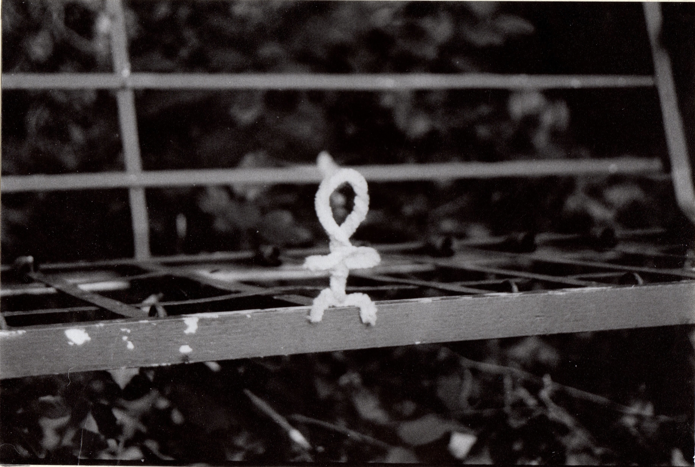
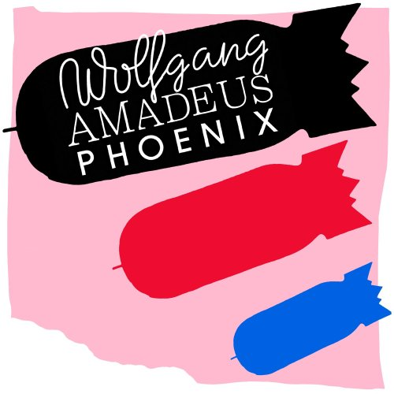
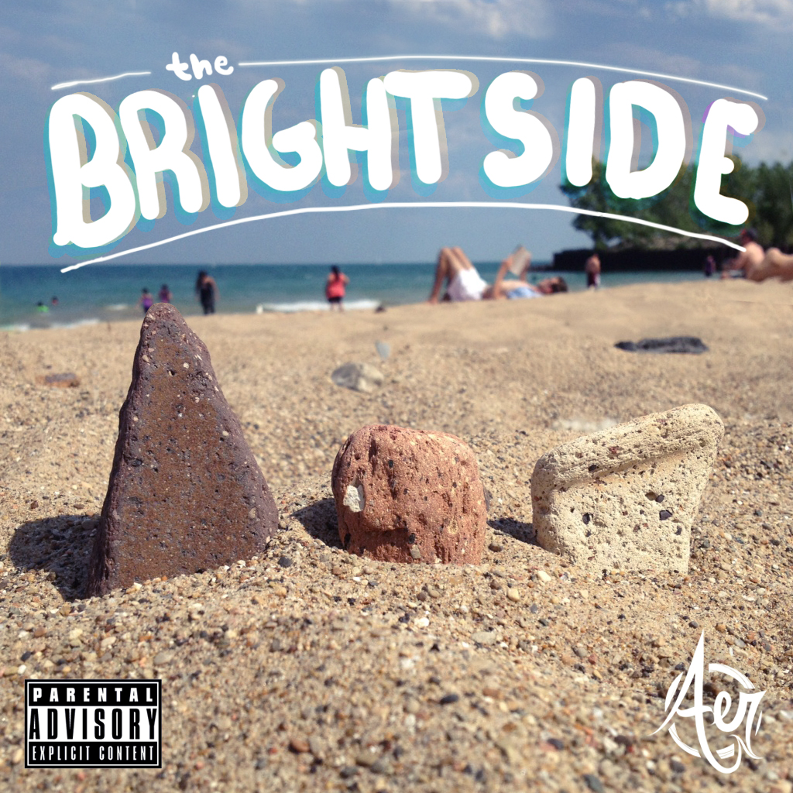
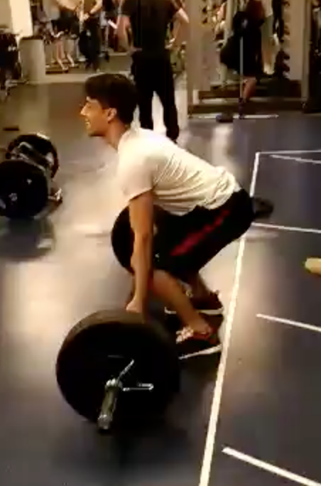
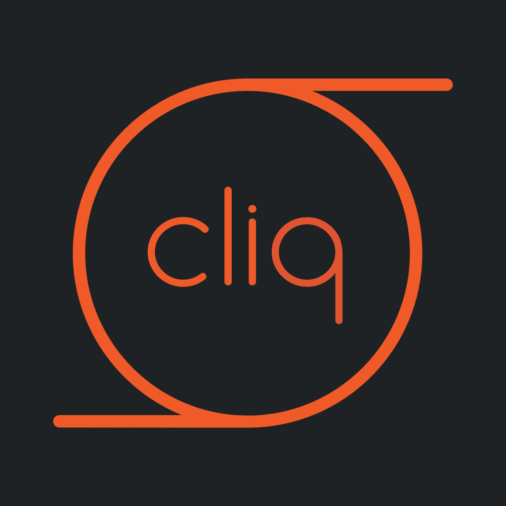
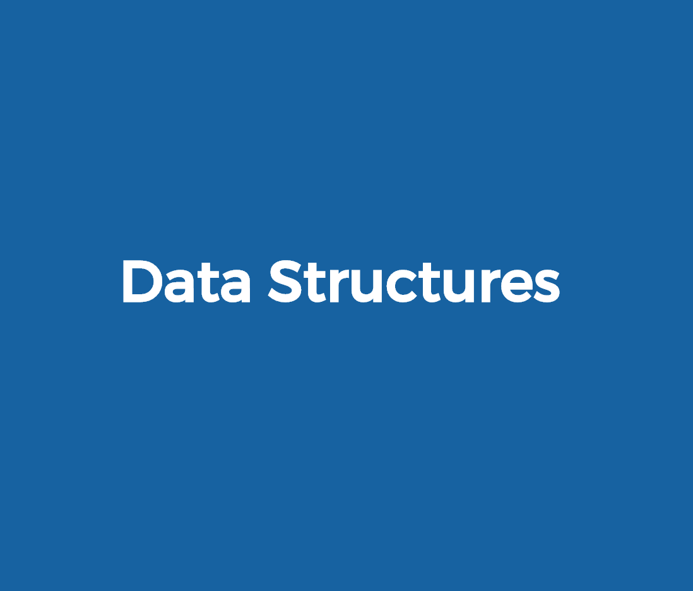
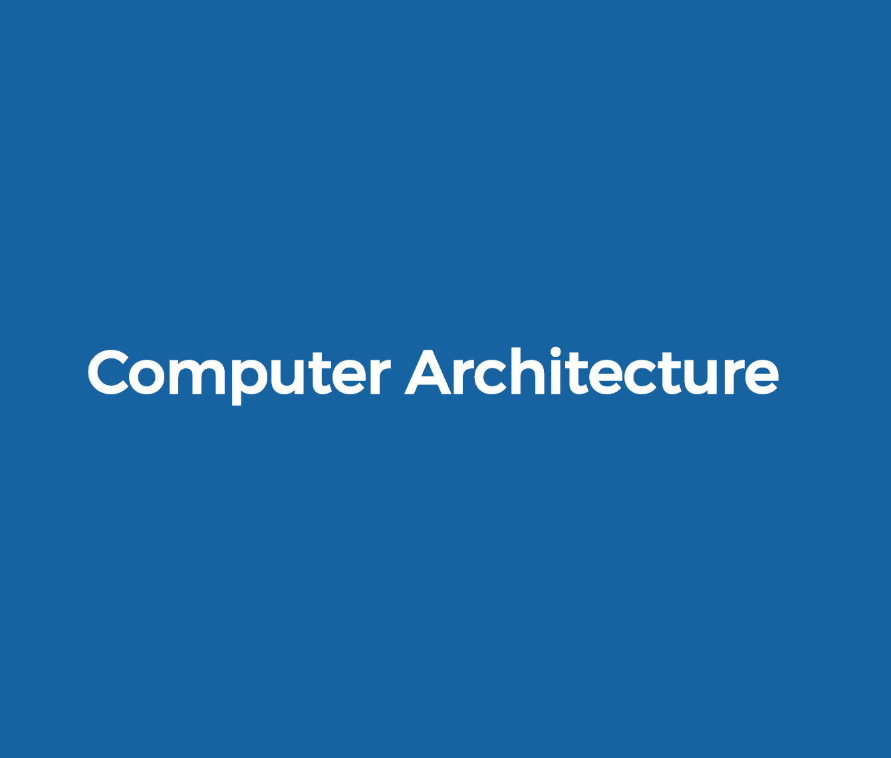
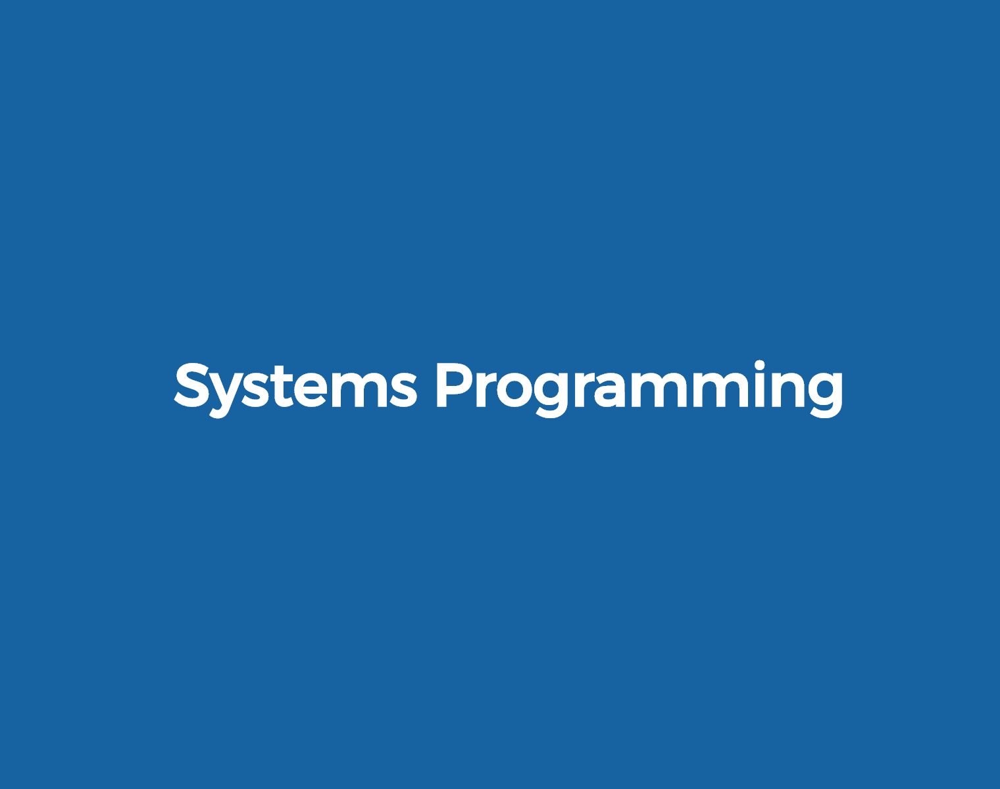
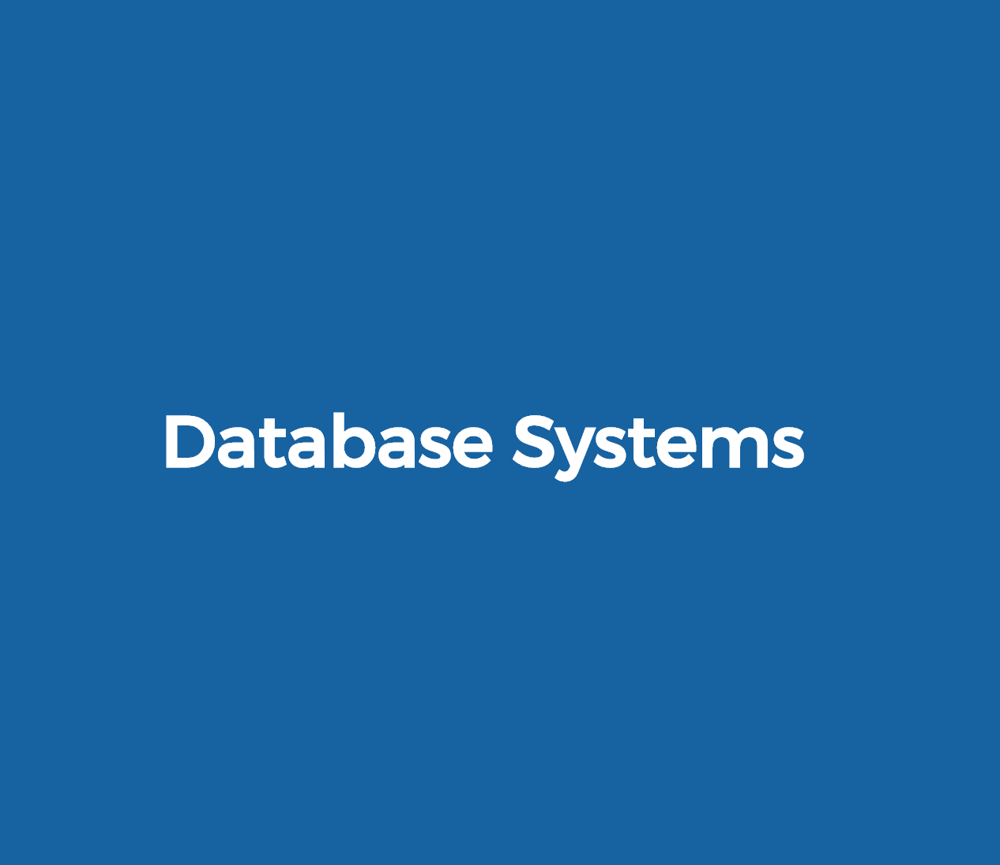

Welcome! I'm Dillon. I'm a student, software engineer,
and technology buff. Most of my experience and interests
are backend and data related but I'm definitely an enthusiast
of design and would love to gain experience outside of backend.
I'm an undergraduate computer science student at the
University of Illinois Urbana-Champaign. I began my
BS in 2015 and plan to complete it in 2018. I'm currently
considering completing an MCS in 2019.

I like shooting film photography and developing it myself
when I have time. This is a favorite picture of mine.
This is an example of a Spanish Revival, one of my favorite architectural
styles. Architecture and real estate are another hobby of mine.
I've had experience listing and marketing a house for rent as well.

Wolfgang Amadeus by Phoenix

The Brightside by Aer

Experience

Cliq is a startup that I interned at as a software developer
from May-Aug 2016 that offers a platform for groups of
friends to meet. Think "Tinder for Groups of Friends". I primarily
worked on a location based event aggregation web app that I later
ported to native iOS as well as smaller features such as intelligently
suggesting friends to invite to the app. I used Flask, Mongo, Redis,
Swift/Objective-C, HTML/CSS/JS, AWS, and Git throughout my time there.
Barrington Area Chamber of Commerce is a local business marketing and
networking organization that I interned at from May 2014-Jan 2015.
I helped create and organize marketing materials for local businesses and
run networking and community events.
Projects
I worked on a Wikipedia Vandalism Detection project in a group
from Sep-Nov 2016. The goal was to build a model that can detect
a fraudulent or incorrect revision based on revision data from
WikiDumps using scikit-learn and pandas. I initially trained a
logistic regression and helped clean the data. I later used dimensionality
reduction techniques and researched which features were the most
significant to improve the accuracy of our final random forest model.
VirtualVoyager is a trip creation webapp that allows a user
to find a trip based on a keyword such as 'rock climbing' for example.
I led this project for my databases class. We used MariaDB and Flask
on an Apache server. I built the majority of the project other than
the webcrawler for Viator.com used to find relevant locations based on a keyword
and the text parsing required to use WikiVoyage location information.
Relevant Coursework
Basic and fundamental concepts of computer science taught in
Java
Discrete mathematical structures frequently used in Computer Science

Abstraction and implementation of basic data structures using
C++

Fundamentals of computer architecture using Verilog and MIPS

Fundamentals of system programming including memory management,
processes, concurrency, file systems, and networking in C
Fundamental concepts of numerical methods using Python, Numpy,
and MatPlotLib.

Theory, organization, and implementation of database systems
using MySQL, Java, and Python.
Design, implementation, and application of data warehousing
and data mining concepts.